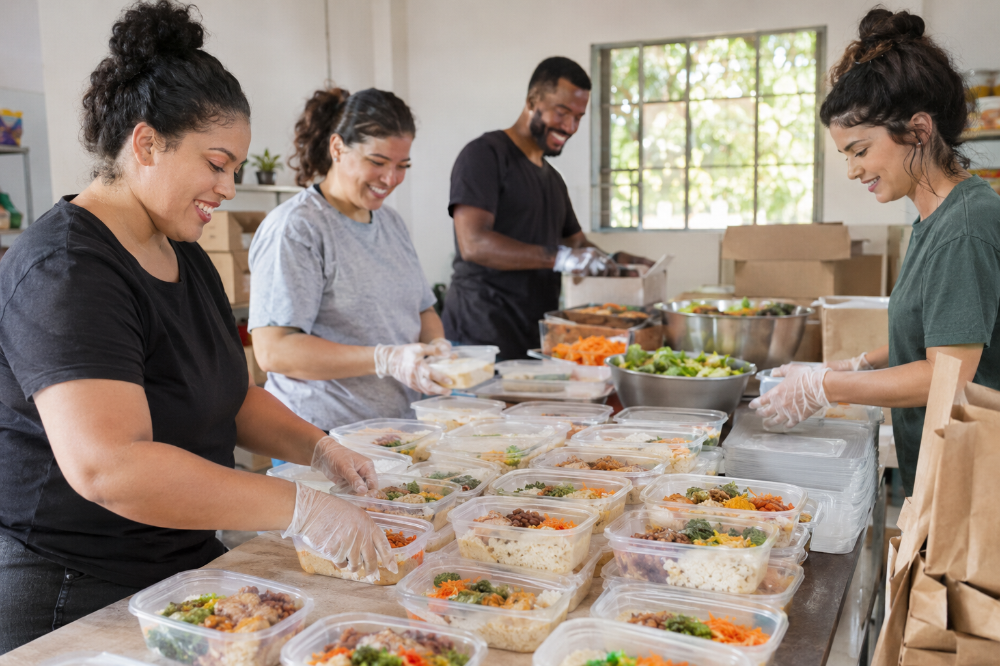
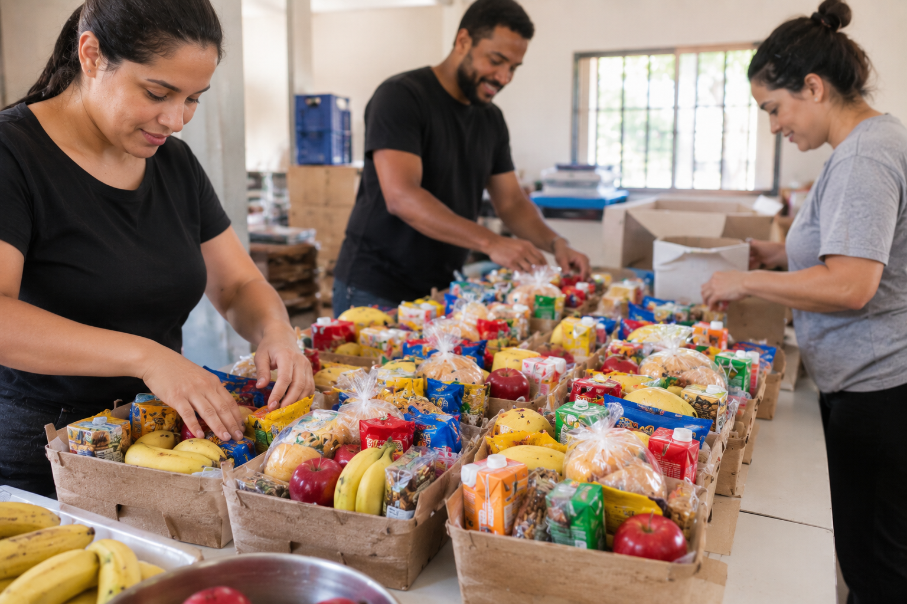

Nossos projetos
Conheça as ações do Alimento que Abraça e descubra como participar.
Campanha de doação de alimentos
Arrecadamos alimentos para preparar marmitas e montar mini cestas básicas.
- Alimentos não perecíveis
- Alimentos que não precisam de cozimento ou refrigeração
- Embalagens para as marmitas
Voluntariado
Voluntários ajudam a preparar, organizar e distribuir os alimentos.
- Preparação das refeições
- Montagem das mini cestas
- Distribuição nas ruas
Campanha de doação financeira
Sua doação financeira ajuda a manter e ampliar as ações da ONG.
Distribuição de marmitas
Distribuímos marmitas prontas a pessoas em situação de rua, com cuidado e dignidade.

Mini cestas básicas
As mini cestas reúnem alimentos que não precisam de cozimento ou refrigeração.

Formas de participação
Escolha como ajudar e faça seu cadastro.